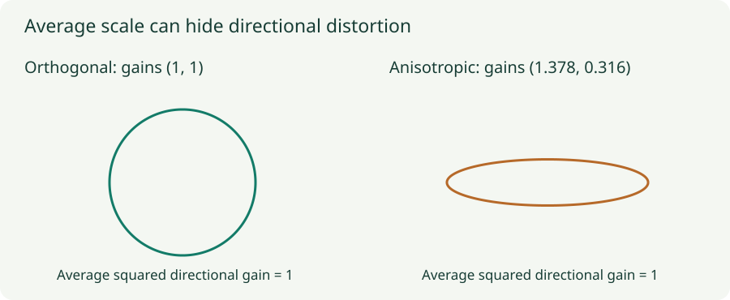

Orthogonal Initialization and LSUV: Beyond Entry-wise Variance
See why i.i.d. Gaussian matrices distort singular directions even with unit average variance, how orthogonal matrices preserve every direction, and how LSUV calibrates nonlinear layers with data.
LeCun, Xavier, and He initialization only control the average squared gain across directions. An i.i.d. Gaussian matrix still stretches some input directions and crushes others—an imbalance that compounds across depth. Orthogonal initialization sets all singular values equal, and LSUV calibrates layer output variance directly on a mini-batch.
1. Why entry-wise variance does not preserve every direction
Every matrix $W\in\mathbb R^{n\times n}$ has a singular value decomposition $W=U\Sigma V^\top$, where $V=[v_1,\dots,v_n]$ and $U=[u_1,\dots,u_n]$ are orthonormal bases and $\Sigma=\operatorname{diag}(\sigma_1,\dots,\sigma_n)$ holds the singular values $\sigma_i\ge 0$. For any input $x$,
Entry-wise variance $v=1/n$ only ensures $\mathbb E[\|W\|_F^2]=n$, so the average squared singular value is $\frac1n\sum_{i=1}^n\sigma_i^2\approx 1$. It does not make individual $\sigma_i$ equal to $1$.
Compare $W_1=I_2$ with $W_2=\operatorname{diag}(\sqrt{1.9},\sqrt{0.1})$. Both have $\|W\|_F^2=2$ and average squared gain $1$. Yet $W_2$ amplifies $e_1$ by $\sqrt{1.9}\approx 1.378$ and shrinks $e_2$ by $\sqrt{0.1}\approx 0.316$. Across $L=10$ layers, $W_2^{10}$ amplifies $e_1$ by $1.378^{10}\approx 24.7$ and attenuates $e_2$ to $0.316^{10}\approx 10^{-5}$.

2. Orthogonal matrices and the end-to-end Jacobian
A square matrix $Q\in\mathbb R^{n\times n}$ is orthogonal if $Q^\top Q=I$. Then for every vector $x$,
Because a product of orthogonal matrices is still orthogonal ($(Q_2Q_1)^\top(Q_2Q_1)=Q_1^\top Q_2^\top Q_2Q_1=I$), an $L$-layer linear chain $W_l=Q_l$ preserves every input norm and backward gradient norm across arbitrary depth—a property called dynamical isometry (for rectangular $m\times n$ layers, semi-orthogonal initialization sets $W^\top W=I_n$ if $m\ge n$ or $WW^\top=I_m$ if $m<n$).
When nonlinear activations $h_l=\phi(z_l)$ are inserted, the end-to-end input–output Jacobian is
For ReLU, $D_l$ has $1$s on active units and $0$s on inactive units. Multiplying $W_l=gQ_l$ by a projection mask $D_l$ zeros out roughly half the rows at each layer, so $J$ loses rank and its singular values spread out even when each $W_l$ starts orthogonal.
3. LSUV: Layer-Sequential Unit-Variance calibration
Instead of relying on analytic moment formulas when activations or architectures are complex, LSUV (Mishkin & Matas, 2016) calibrates scale directly on a real mini-batch $X$ before training begins:
- Orthogonal start: Initialize each weight matrix $W_l$ orthogonally.
- Sequential forward pass: For layer $l=1,\dots,L$ in forward order, compute layer outputs $h_l$ on the mini-batch $X$ and measure their pooled variance $v_l=\widehat{\operatorname{Var}}(h_l)$.
- Rescale to unit variance: Update $W_l\leftarrow W_l/\sqrt{v_l}$ (repeating up to a few times if the activation is non-homogeneous until $|v_l-1|$ is within tolerance) before moving to layer $l+1$.
# Random orthogonal initialization via QR, followed by one LSUV pass
torch.nn.init.orthogonal_(layer.weight, gain=math.sqrt(2))
with torch.no_grad():
out = F.relu(layer(calib_batch))
layer.weight.div_(out.var().sqrt().clamp_min(1e-6))4. Lab: compare layer moments with the Jacobian spectrum
A sampled width-16 network
Compare Gaussian, orthogonal, and orthogonal-plus-LSUV initialization on 64 Gaussian inputs. Linear layers use gain 1; ReLU layers start with gain $\sqrt2$. LSUV then calibrates post-activation variance sequentially on this batch. The second chart computes the full network Jacobian’s singular values at the first input.
- Linear + Gaussian vs. Orthogonal: With
Linearactivation at depth $10$,Gaussianspreads the $16$ Jacobian singular values across several orders of magnitude, whereasOrthogonalkeeps all $16$ singular values at exactly $1$ ($\log_{10}\sigma_i=0$). - ReLU + LSUV: Switch to
ReLUandOrthogonal + LSUV. LSUV pins every layer’s output variance to $1.0$ on the left chart, while the right chart shows that ReLU’s zero gates still kill several singular directions of $J$.
5. Questions worth answering
Because $\operatorname{Var}(W_{ij})=1/n$ only fixes the average squared singular value $\frac1n\sum_i\sigma_i^2\approx 1$. Individual singular values span above and below $1$, and raising them to the $L$th power across depth amplifies the spread exponentially.
Rescaling $W_l$ changes the distribution of $h_l$, which is the input to layer $l+1$. Calibrating layer $l+1$ before layer $l$ is finalized would calibrate it against the wrong input scale.
No. LSUV runs once at step $0$ to set the initial weight scales; it adds no runtime overhead and does not renormalize activations on subsequent training steps.
Sources
Saxe et al., Exact Solutions to the Nonlinear Dynamics of Learning in Deep Linear Neural Networks; Mishkin and Matas, All You Need Is a Good Init; PyTorch orthogonal initialization.